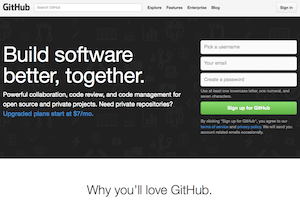
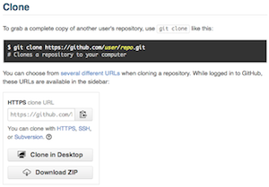
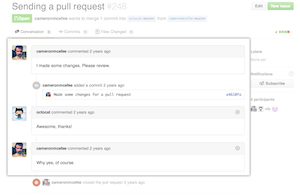

Instalación del cliente de Github.
Debes descargar e instalar el cliente de Github para Windows en tu ordenador para facilitarte la gestión de tu proyecto http://windows.github.com
También puedes descargar el cliente de Github para Mac desde http://mac.github.com


Realiza los ejercicios.
Tienes que realizar los ejercicios propuestos y que podrás encontrar en el repositorio del profesor. Comienza por orden de numeración.


Sube las actividades.
Realiza un pull request con cada solución propuesta a cada actividad para que pueda corregir y comentar la solución que propones.